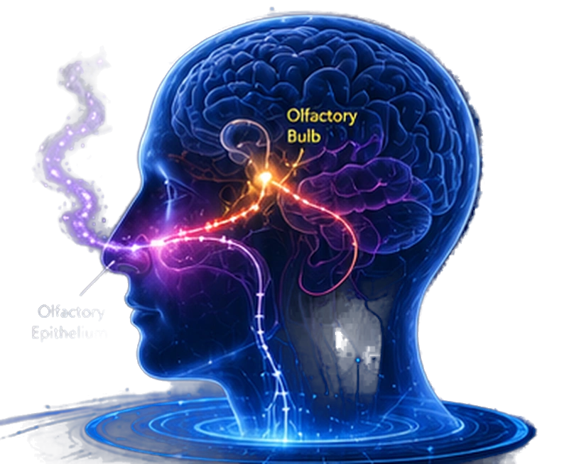
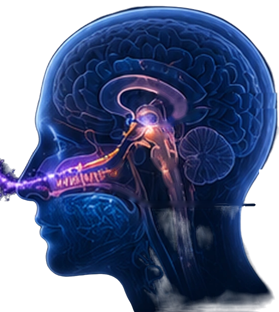
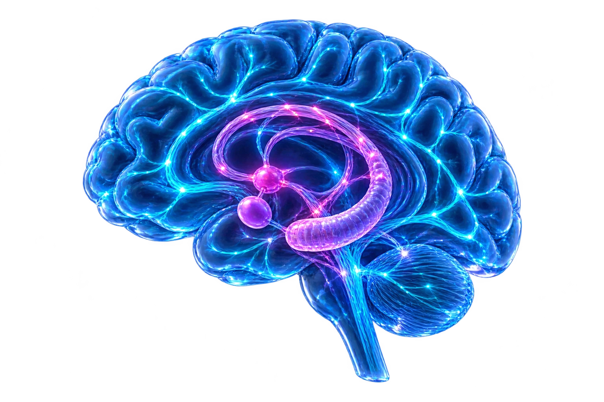
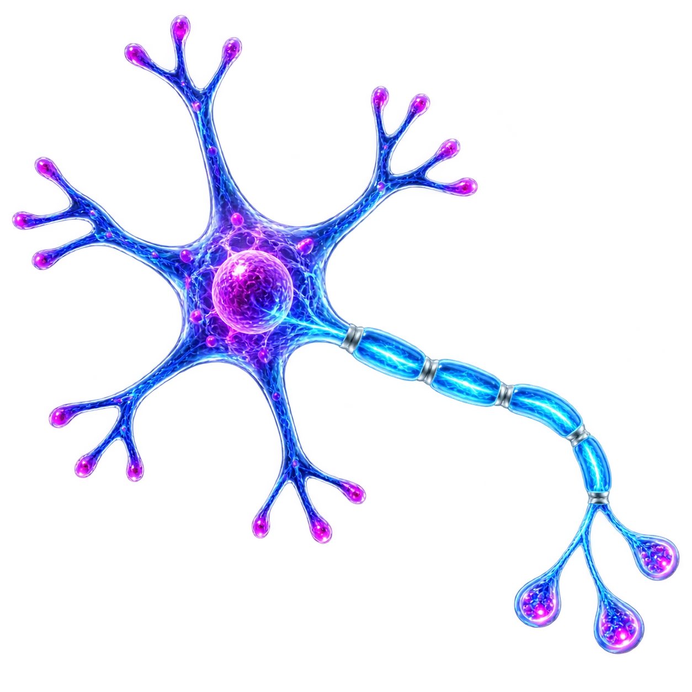
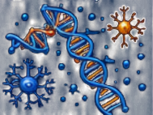
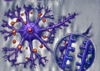
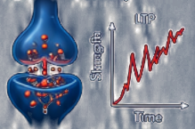
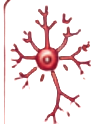

Olfactory Bulb
First relay station
The Central Biological Platform Linking
Human Health and Dementia Prevention
Olfactory–Brain Modulation by Scented Therapy
Scented therapy harnesses the direct connection between the nose and brain to activate powerful neuromodulatory systems, enhance neuroplasticity, and support cognitive and emotional well-being.

Olfactory Input
Bio-Responsive Ingredients /
Aromatic Compounds

Detection → Integration → Modulation
First relay station
Odor processing
Emotion, salience

Memory, learning
Decision making
Homeostasis, stress regulation

Locus Coeruleus
(NE)
Raphe Nuclei
(5-HT)
Ventral Tegmental Area
(DA)
Basal Forebrain
(ACh)
Multi-Level & Multi-Mechanism Integration
Induction of Neurotrophic & Growth Factors



Balance of internal & external factors maintains brain function and supports neuroplasticity.
& Dementia Prevention

Preserve Brain Function, Extend Healthy Longevity